Invoice Flow Screening
How the eleven PO-type workflows for supplier invoices behave, how efficient each one is, whether they are in statistical control, and where an improvement project would pay off most.
- How to read this report
- Key findings
- Data
- 1 · Workflows
- Routing at validation
- 2 · KPIs
- 3 · Control & capability
- 4 · Focus
Before you startHow to read this report
The report follows the four steps of the assignment. Each step first says what was done and why, then shows the results, then gives a worked example from a real invoice. You don't need to know process mining or statistics in advance. The terms below are used throughout.
- Case
- One invoice handled against one purchase-order document (
PO_ID). Everything that happens to it, from arrival to posting, belongs to the same case. - Event / activity
- One recorded step in a case, such as Initial validation or Posted manually, with a timestamp and the user who did it. The activity is the name of the step.
- Trace
- The ordered list of activities in one case.
- Variant
- All cases with exactly the same trace. A process with few variants is standardised. Many variants mean many different paths, which usually means exceptions and rework.
- Process map (DFG)
- A directly-follows graph. Boxes are activities and arrows show which activity came directly after which, with counts.
- PO type
- The SAP purchase-order category (e.g.
ZNB2third-party order). Different PO types follow different workflows, so they are analysed separately. The 11 types in the data cover four procurement situations: standard purchasing of goods for stock (ZJD1 normal, ZNB1 manual, ZJD3 automatic replenishment), third-party orders where the supplier ships directly to the customer (ZNB2/3/4/6, dropshipping), transportation services (ZNBF) and returns of goods already bought (NB2, ZRPC, ZRPM). The service order types ZINS and ZSER from the assignment do not occur in the log. - System user (bot)
- A user ID that is a program, not a person. Its events cost no manual effort.
- Touchless
- A case where only system users did anything: zero manual activities.
- Invoice cycle
- One invoice document within a case, identified by
SAP_PO_No. A purchase order can receive several invoices (e.g. for partial deliveries), so one case can contain several cycles. Each cycle starts again with Data management. - Rework
- An activity that happens more than once within the same invoice cycle, e.g. the same invoice is validated twice. Repeats across different invoices of the same PO are not rework.
- GR, MM, WM, FI
- SAP terms: goods receipt (proof that the goods arrived), Materials Management, Warehouse Management and Financial Accounting. Invoices that refer to a purchase order go to MM, where they are matched against the PO and the goods receipt. Invoices without a PO reference go to FI for account coding.
- Routing code
- The value of
SAP_Next_Processing_Typeon an event: the queue SAP sends the invoice to next. On Initial validation it decides the road:WAITGR(goods-receipt check, then automatic posting),ZWMGRW(goods receipt from WM first),CTRL1(manual control queue) orDELE(deletion). See Routing at validation. - SLA
- Service level: here a deadline for finishing an invoice. 10 days to get the 2% cash discount, 30 days for the legal payment deadline.
- Control chart
- A time chart of a KPI with a centre line and limits at ±3 standard deviations. Points outside the limits, or suspicious patterns, mean something changed in the process.
- Cpu
- Process capability against an upper limit: how many "3-sigma widths" fit between the average and the deadline. Cpu ≥ 1 is good, below 1 means many cases break the deadline.
Key findings
of invoices are processed fully touchless. Two system users (User1587, User280) perform 94.7% of all events.
Manual and normal orders are only 5.5% of the cases but carry the highest-value invoices. Invoice by invoice, 24% and 17% take longer than 10 days, mostly those waiting for manual posting. They account for 95% of the missed cash discount.
of 2% cash discount is missed on 9,045 invoices that were posted after more than 10 days.
of all manual work comes from returns to vendor. They meet the SLAs well, so this is a cost problem, not a deadline problem.
processes are out of control on the weekly X̄–S charts. The exception, ZRPM, has only 5 cases. A large part of the signal is a drift in the case population from October onward, so read these verdicts together with the data caveats.
the road is already chosen. 18% of validations send the invoice straight to the manual control queue (CTRL1) and skip the goods-receipt check. That is 44% of ZNB1 invoices and 32% of ZJD1 invoices, so their manual posting is decided up front, not after a failed auto-post. Details
Data preparationWhat the event log contains
Each case is one PO_ID, the invoice processing for a purchase-order document. Events are ordered by timestamp. A case can contain several invoice cycles: each new SAP_PO_No starts again with Data management, and Item_No restarts at 1. 15,416 cases (8%) hold more than one cycle, 215,128 cycles in total. That is also why Item_No cannot be used to order a whole case. Throughput times are calculated from the timestamps in fractional days, not taken from the pre-computed whole-day column.
- 41 cases without a PO type were removed, leaving 186,547 cases.
- The data contains 11 PO types, not twelve. The assignment's own table also lists 11 codes.
- Case volume falls sharply in October and November 2025 (14k and 3.5k cases, against about 60k in September), and those later cases are slower and more manual. This looks like an extraction effect: probably only cases that reached a certain state were included. It causes a lot of the late-period signals in the control charts.
- 1,779 cases (1%) do not end in a posting or deletion, so they may be unfinished. They are kept, because removing them would hide slow cases.
No goods-receipt date. The log records when SAP checks for the goods receipt, not when the goods arrived. Waiting for goods outside the automatic path (e.g. a clerk holding an invoice) can't be measured; it shows up only as a long gap before Posted manually.
No credit notes by sign. No invoice value is negative, including all return types (NB2, ZRPC, ZRPM). Credit notes can't be told apart from invoices in this data.
Routing field: SAP_Next_Processing_Type shows where SAP routes the invoice after each step. It explains why some invoices never wait for the goods receipt (see Routing at validation).
Step 1Understand the workflows
Every case starts with Data management → Initial validation. The happy path then waits for the goods receipt (GR) and posts automatically in MM. Deviations come from three places: GR problems (repeated waiting, retrieving the GR from WM, transferring to MM and restarting), manual posting (after a failed auto-post or directly after validation), and exception handling (approval for price differences, asking for comments, deletion). The PO types mix these in very different proportions.
| Code | PO type | Situation | Cases | Share | Activities | Variants | Top variant | Variants for 80% |
|---|---|---|---|---|---|---|---|---|
| ZNB2 | Third-party order Type 1 | Third-party | 92,768 | 49.7% | 19 | 169 | 95% | 1 |
| NB2 | Return to vendor | Returns | 34,669 | 18.6% | 24 | 302 | 35% | 4 |
| ZNB4 | Third-party order Type 3 | Third-party | 26,349 | 14.1% | 22 | 152 | 74% | 2 |
| ZNB3 | Third-party order Type 2 | Third-party | 20,336 | 10.9% | 16 | 60 | 68% | 2 |
| ZJD1 | Normal order | Standard purchasing | 5,519 | 3.0% | 21 | 838 | 46% | 29 |
| ZNB1 | Manual order | Standard purchasing | 4,753 | 2.5% | 22 | 1,161 | 30% | 211 |
| ZJD3 | Automatic order | Standard purchasing | 953 | 0.5% | 20 | 289 | 37% | 99 |
| ZNB6 | Third-party order Type 4 | Third-party | 797 | 0.4% | 21 | 149 | 27% | 16 |
| ZRPC | Return order Type 1 | Returns | 364 | 0.2% | 19 | 48 | 47% | 4 |
| ZNBF | Transportation order | Transportation | 34 | 0.0% | 11 | 10 | 71% | 4 |
| ZRPM | Return order Type 2 | Returns | 5 | 0.0% | 8 | 3 | 60% | 2 |
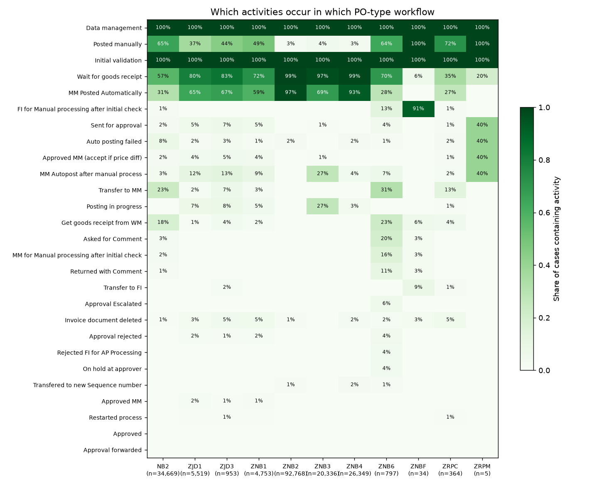
Take the NB2 (Return to vendor) frequency map below. Each box shows an activity and how often it occurred. Data management occurs 43,691 times in 34,669 cases, so some cases go through it more than once. In NB2 that is almost always rework (the invoice is restarted), because only 1.2% of NB2 cases hold a second invoice.
Each arrow counts how often one activity was directly followed by another. The arrow from Initial validation to Posted manually (18,709) is the road that skips the automatic posting entirely. (Annotation: SAP picks this road during validation, using routing code CTRL1. In NB2, 63% of these direct postings are made by the nightly batch job User280, not by a person. See Routing at validation.) The loop arrow on Wait for goods receipt (6,401) means the system checked for the goods receipt again because it still hadn't arrived.
Darker boxes and thicker arrows mean more traffic. The performance map uses the same layout but labels the arrows with the median time between the two steps. That shows where invoices wait, not just where they go.
A variant is shown as a chain of steps, e.g. Data management → Initial validation → Wait for goods receipt → MM Posted Automatically. That is the happy path: 95% of all ZNB2 cases follow exactly this sequence. In ZNB1 the most common variant covers only 30%, and you need 211 variants to cover 80% of the cases. The "Variants for 80%" column in the table above is a quick measure of how standardised each process is.
Where the road is chosen: routing at validation
Why do some invoices never wait for the goods receipt? Initial validation records a routing code (SAP_Next_Processing_Type) that fixes the next queue. Across all 225,769 validations:
WAITGR, 78%: goods-receipt check. 99.9% are followed by Wait for goods receipt, the road to automatic posting.CTRL1, 18%: manual control queue. No goods-receipt check. 75% are followed directly by Posted manually, the rest by Transfer to MM, deletion, re-sequencing or approval.ZWMGRW, 3%: goods receipt from Warehouse Management first, then the normal wait.DELE, 1%: deletion.
The share sent to the manual queue depends heavily on the PO type. Counted per invoice (first validation of each SAP_PO_No):
| Code | CTRL1 manual queue | WAITGR goods-receipt check | ZWMGRW via WM | DELE |
|---|---|---|---|---|
| ZNB2 | 3% | 96% | 0% | 1% |
| NB2 | 45% | 38% | 16% | 1% |
| ZNB4 | 4% | 94% | 0% | 2% |
| ZNB3 | 3% | 95% | 0% | 2% |
| ZJD1 | 32% | 66% | 1% | 1% |
| ZNB1 | 44% | 53% | 1% | 3% |
| ZJD3 | 27% | 68% | 3% | 3% |
| ZNB6 | 51% | 38% | 10% | 0% |
| ZRPC | 67% | 27% | 2% | 4% |
| ZNBF | 95% | 0% | 5% | 0% |
| ZRPM | 89% | 11% | 0% | 0% |
"Posted manually" isn't always manual. On the direct path (Data management → Initial validation → Posted manually, 14,749 cases), the nightly batch job User280 makes 51% of the postings: 63% in NB2 and almost none in other types. Bot postings take a median of 1.3 days from validation (they wait for the next night's run). Human postings take 3.0 days, with a 90th percentile of 19 days. In ZNB6 the human queue takes a median of 52 days. This is consistent with the Step 2 classification of User280 as a system user, so the manual-work figures elsewhere in the report already exclude these postings.
What the data can't say: which validation rule sends an invoice to CTRL1. That needs the SAP configuration or the validation messages, which aren't in the log.
Process maps and variants per PO type
Open a PO type to see its frequency map, its performance map and its five most common variants. The maps for large types hide activities and transitions that occur in fewer than 0.5% of cases (2% for types with 300–5,000 cases), so that they stay readable.
ZNB2 Third-party order Type 1
Near-perfect straight-through flow: 95% of cases follow the single happy path (data management → validation → wait for GR → automatic posting), usually within minutes.
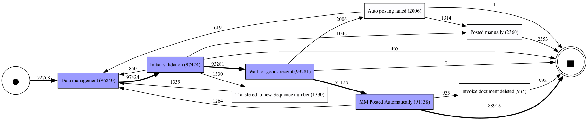
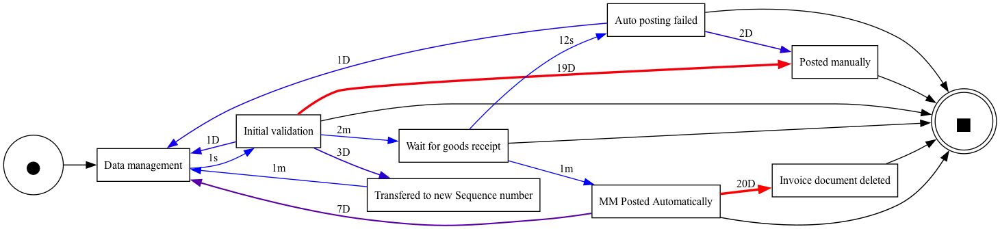
Top 5 variants
| # | Variant | Cases | Share | Median days | Manual acts |
|---|---|---|---|---|---|
| 1 |
| 88,215 | 95.1% | 0.0 | 0.00 |
| 2 |
| 1,258 | 1.4% | 7.4 | 1.91 |
| 3 |
| 716 | 0.8% | 20.8 | 1.00 |
| 4 |
| 584 | 0.6% | 18.6 | 0.00 |
| 5 |
| 484 | 0.5% | 22.3 | 0.99 |
NB2 Return to vendor
Two main roads. About a third of the cases post automatically, but the most frequent variant (35%) ends in a manual posting. A goods-receipt loop through WM and 'Transfer to MM' restarts the invoice for about one in six cases. 24% of cases contain real rework, the highest share among the large PO types.
Variant 1 (direct manual posting) is mostly automated after all: 63% of its 12,110 postings come from the nightly batch User280 (median 1.3 days after validation), 37% from people (median 2.8 days). 45% of NB2 invoices are routed to the manual queue CTRL1 at validation, and 16% to a goods receipt from WM (ZWMGRW), the start of the WM loop in variant 3.
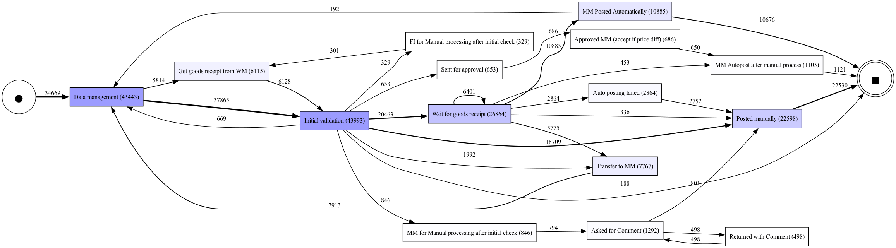
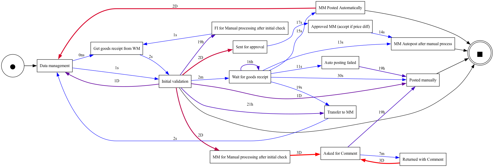
Top 5 variants
| # | Variant | Cases | Share | Median days | Manual acts |
|---|---|---|---|---|---|
| 1 |
| 12,110 | 34.9% | 1.5 | 0.37 |
| 2 |
| 10,437 | 30.1% | 0.0 | 0.00 |
| 3 |
| 3,932 | 11.3% | 1.9 | 0.39 |
| 4 |
| 2,679 | 7.7% | 0.8 | 0.61 |
| 5 |
| 1,353 | 3.9% | 3.5 | 1.84 |
ZNB4 Third-party order Type 3
Happy path for 74% of cases. 22% of cases hold more than one invoice, which stretches the case's throughput time. Taken invoice by invoice, 94% post automatically and only 2.1% take longer than 10 days.
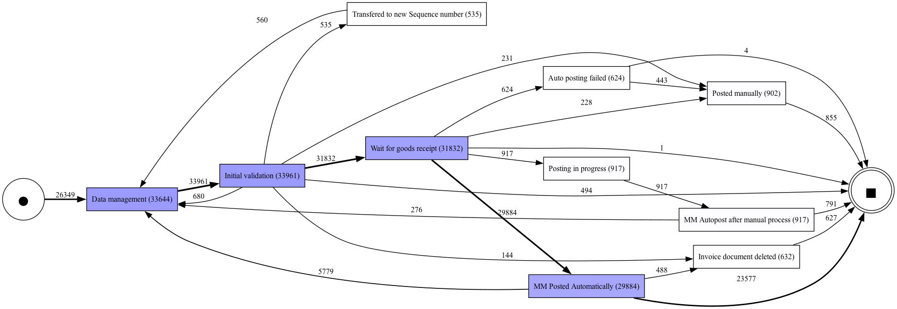
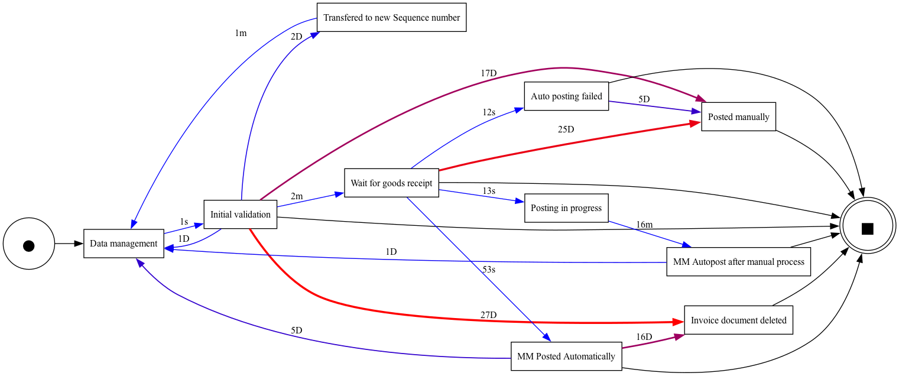
Top 5 variants
| # | Variant | Cases | Share | Median days | Manual acts |
|---|---|---|---|---|---|
| 1 |
| 19,369 | 73.5% | 0.0 | 0.00 |
| 2 |
| 2,739 | 10.4% | 6.2 | 0.00 |
| 3 |
| 893 | 3.4% | 13.5 | 0.00 |
| 4 |
| 653 | 2.5% | 0.0 | 0.00 |
| 5 |
| 473 | 1.8% | 17.9 | 1.00 |
ZNB3 Third-party order Type 2
Very stable and fast: two variants cover 80% of cases and the throughput is almost always same-day.
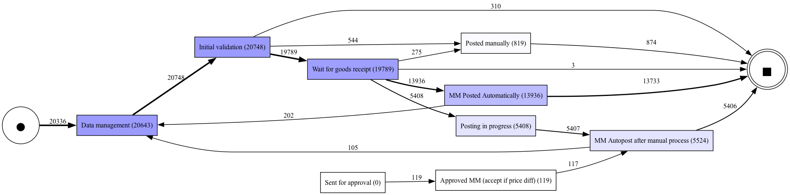
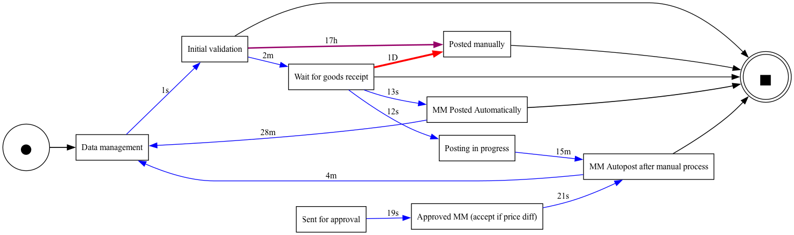
Top 5 variants
| # | Variant | Cases | Share | Median days | Manual acts |
|---|---|---|---|---|---|
| 1 |
| 13,727 | 67.5% | 0.0 | 0.00 |
| 2 |
| 5,264 | 25.9% | 0.0 | 0.00 |
| 3 |
| 524 | 2.6% | 0.7 | 1.00 |
| 4 |
| 265 | 1.3% | 4.8 | 1.00 |
| 5 |
| 196 | 1.0% | 0.0 | 0.00 |
ZJD1 Normal order
60% of cases are touchless. A case often holds several invoices (1.9 on average), which makes traces look like repeated passes. Real rework within one invoice is rare (4%). The slow part is manual posting: 47% of invoices are posted by hand, after a median of 4.8 days.
32% of ZJD1 invoices are sent to the manual queue (CTRL1) during validation, before any goods-receipt check. All of the direct manual postings are made by people, not by the batch job.
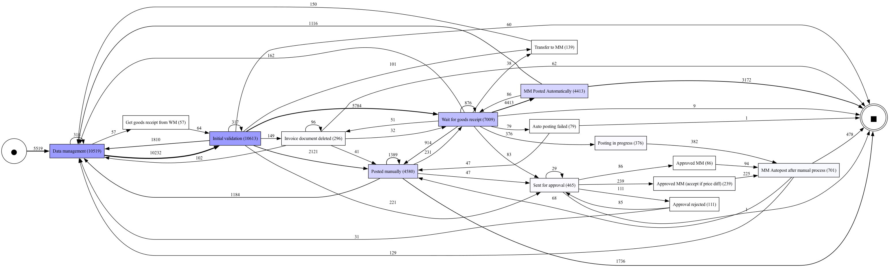
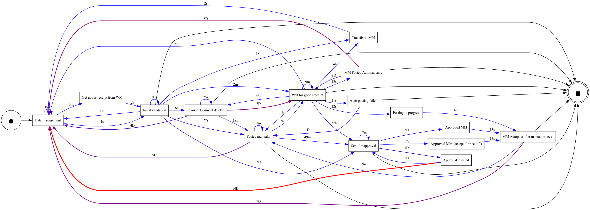
Top 5 variants
| # | Variant | Cases | Share | Median days | Manual acts |
|---|---|---|---|---|---|
| 1 |
| 2,559 | 46.4% | 0.0 | 0.00 |
| 2 |
| 565 | 10.2% | 3.2 | 1.00 |
| 3 |
| 253 | 4.6% | 11.8 | 0.00 |
| 4 |
| 239 | 4.3% | 0.0 | 0.00 |
| 5 |
| 144 | 2.6% | 3.7 | 1.00 |
ZNB1 Manual order
The least standardised high-value workflow: 1,161 variants for 4,753 cases. That is mostly because a case holds 2.9 invoices on average and their steps interleave. Real rework within one invoice is only 6%. 59% of invoices are posted manually, after a median of 7.4 days, while the automatically posted ones are done the same day.
44% of ZNB1 invoices are sent to the manual queue (CTRL1) during validation. Most of the manual posting is decided there, not after a failed auto-post. Almost all of the direct manual postings are made by people (median 5.4 days).
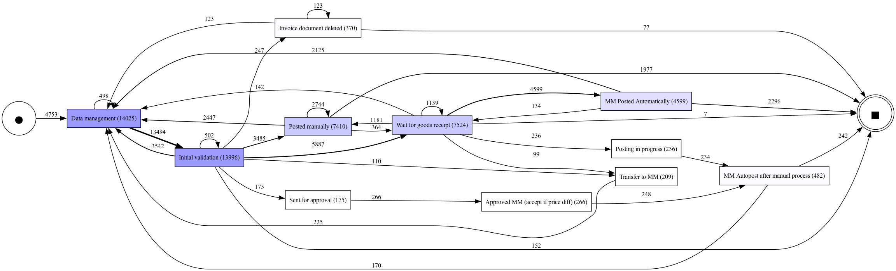

Top 5 variants
| # | Variant | Cases | Share | Median days | Manual acts |
|---|---|---|---|---|---|
| 1 |
| 1,408 | 29.6% | 0.0 | 0.00 |
| 2 |
| 498 | 10.5% | 5.5 | 1.00 |
| 3 |
| 295 | 6.2% | 20.0 | 0.00 |
| 4 |
| 127 | 2.7% | 24.6 | 2.00 |
| 5 |
| 120 | 2.5% | 4.2 | 1.00 |
Lead time and missed discount by variant
Lead time runs per invoice, from its first event to its posting. An invoice posted after more than 10 days misses 2% of its value. The value is only known per PO, so it is split evenly over the PO's posted invoices (see Step 4). Invoices that were never posted are left out.
| # | Variant | POs | Invoices | Median days | Mean days | Invoices > 10 d | Missed 2% discount (NOK) |
|---|---|---|---|---|---|---|---|
| 1 |
| 1,408 | 1,408 | 0.0 | 1.5 | 35 | 204,162 |
| 2 |
| 498 | 498 | 5.5 | 6.4 | 106 | 625,679 |
| 3 |
| 295 | 590 | 0.0 | 1.7 | 16 | 62,606 |
| 4 |
| 127 | 254 | 3.0 | 4.6 | 32 | 160,648 |
| 5 |
| 120 | 120 | 4.2 | 6.5 | 16 | 204,242 |
| Other variants | 2,298 | 10,004 | 6.1 | 10.8 | 2,866 | 26,034,518 | |
| All ZNB1 | 4,746 | 12,874 | 4.3 | 9.1 | 3,071 | 27,291,855 |
95% of the 27.3M NOK sits outside the top five, in POs with 4.4 invoices on average. The top five miss only 1.3M NOK. Variants 3 and 4 show why the count runs per invoice: their cases take 20–25 days because a second invoice arrives weeks after the first, but each invoice is mostly posted within days. Counted per PO they would miss 4.5M NOK, per invoice 0.2M NOK.
ZJD3 Automatic order
Despite its name, only 53% of automatic orders are touchless. Cases hold 2.8 invoices on average, and half of the invoices are posted manually (median 6.5 days).
27% of ZJD3 invoices are routed to the manual queue (CTRL1) at validation, even though the PO type is meant to be automatic.
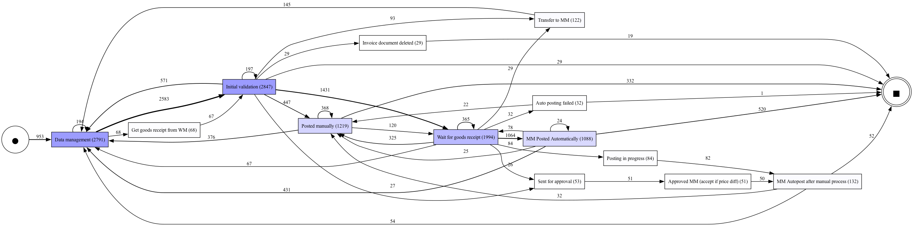
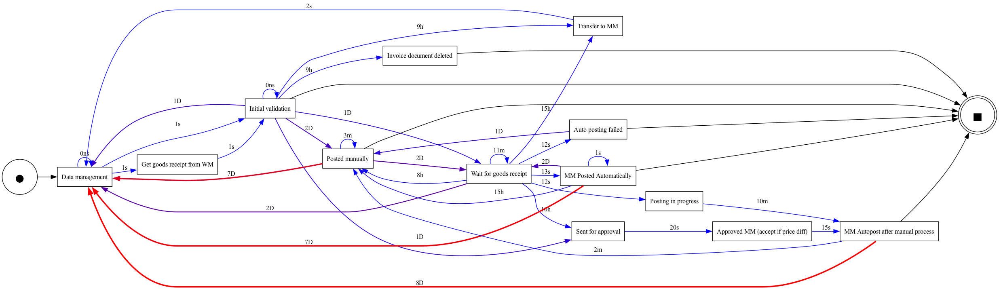
Top 5 variants
| # | Variant | Cases | Share | Median days | Manual acts |
|---|---|---|---|---|---|
| 1 |
| 350 | 36.7% | 1.0 | 0.00 |
| 2 |
| 81 | 8.5% | 3.0 | 1.00 |
| 3 |
| 60 | 6.3% | 22.0 | 0.00 |
| 4 |
| 42 | 4.4% | 4.8 | 1.00 |
| 5 |
| 20 | 2.1% | 1.0 | 0.00 |
ZNB6 Third-party order Type 4
Small but slow: median 29 days, with half the invoices beyond the 30-day payment deadline. 35% of cases contain real rework.
51% of ZNB6 invoices go to the manual queue (CTRL1) at validation. Variant 2 (direct manual posting) then waits a median of 52 days for a person, the longest human queue in the data. Whether the clerks are holding invoices until the goods arrive can't be checked, because the log has no goods-receipt date.
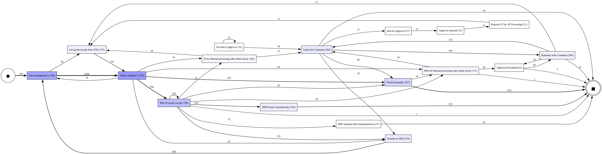
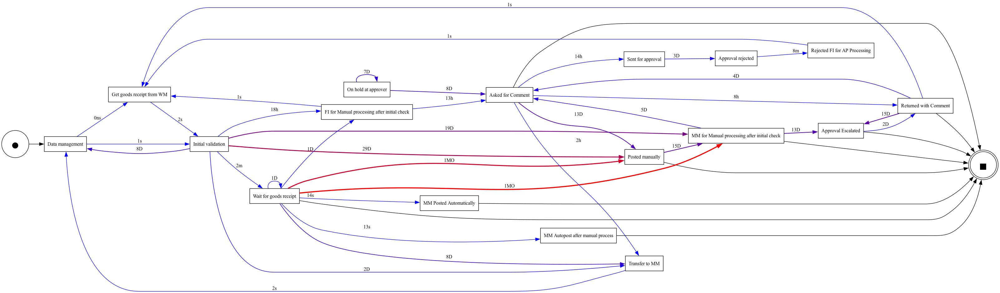
Top 5 variants
| # | Variant | Cases | Share | Median days | Manual acts |
|---|---|---|---|---|---|
| 1 |
| 212 | 26.6% | 1.0 | 0.00 |
| 2 |
| 202 | 25.3% | 51.7 | 1.00 |
| 3 |
| 65 | 8.2% | 75.0 | 1.00 |
| 4 |
| 51 | 6.4% | 2.8 | 1.00 |
| 5 |
| 25 | 3.1% | 13.8 | 7.00 |
ZRPC Return order Type 1
Mostly a short manual-posting flow; a quarter of the cases breach the 10-day SLA.
67% of ZRPC invoices are routed to the manual queue (CTRL1) at validation, and All of the direct manual postings are made by people. Unlike NB2, the other return type, ZRPC returns aren't handled by the nightly batch.
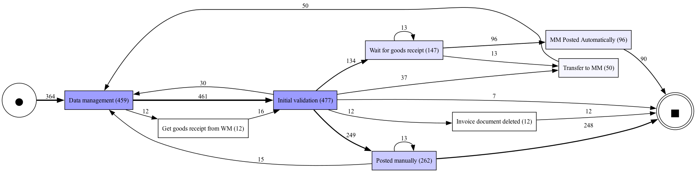
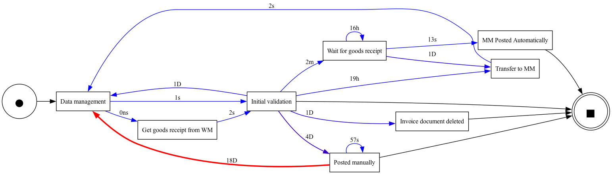
Top 5 variants
| # | Variant | Cases | Share | Median days | Manual acts |
|---|---|---|---|---|---|
| 1 |
| 170 | 46.7% | 4.9 | 1.00 |
| 2 |
| 87 | 23.9% | 0.0 | 0.00 |
| 3 |
| 27 | 7.4% | 5.4 | 2.00 |
| 4 |
| 8 | 2.2% | 4.3 | 1.00 |
| 5 |
| 5 | 1.4% | 0.2 | 0.00 |
ZNBF Transportation order
Only 34 cases, nearly all with rework and manual handling; median 41 days.
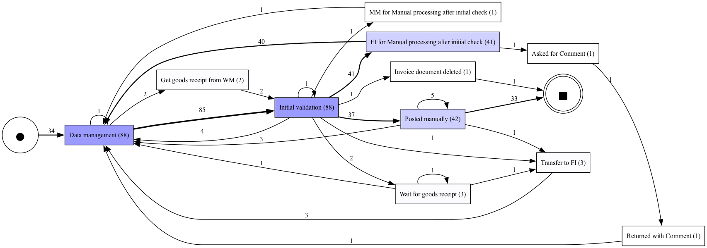
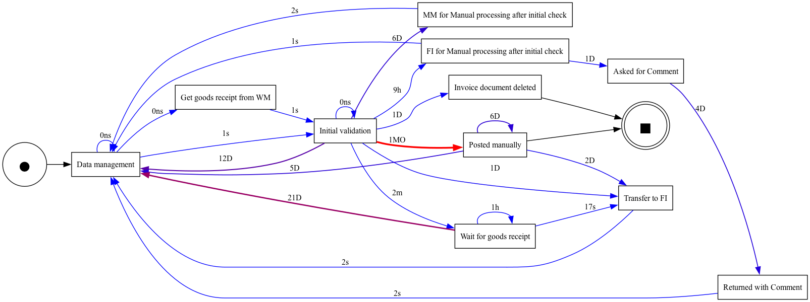
Top 5 variants
| # | Variant | Cases | Share | Median days | Manual acts |
|---|---|---|---|---|---|
| 1 |
| 24 | 70.6% | 35.7 | 2.00 |
| 2 |
| 2 | 5.9% | 19.4 | 1.00 |
| 3 |
| 1 | 2.9% | 72.2 | 4.00 |
| 4 |
| 1 | 2.9% | 38.2 | 5.00 |
| 5 |
| 1 | 2.9% | 148.0 | 9.00 |
ZRPM Return order Type 2
Only 5 cases, too few to characterise a process.
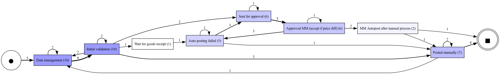
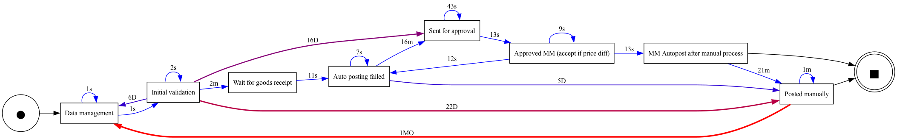
Top 5 variants
| # | Variant | Cases | Share | Median days | Manual acts |
|---|---|---|---|---|---|
| 1 |
| 3 | 60.0% | 22.2 | 1.00 |
| 2 |
| 1 | 20.0% | 74.5 | 13.00 |
| 3 |
| 1 | 20.0% | 19.0 | 3.00 |
Step 2Case-level KPIs and system users
The three KPIs per case are trace length (number of events), throughput time (days from first to last event) and manual activities count (trace length minus events by system users). To get the manual count, the system users first have to be identified.
How system users were told apart from humans
The assignment gives three tell-tale signs of a bot: a very high workload, very short waits between events, and activity only in a fixed night-time batch window. Every user ID was profiled on four kinds of measures:
- Workload: total events, cases touched, and events per day on which the user was active. A person working full time handles a few dozen invoice steps a day. A program handles hundreds or thousands.
- Speed: median time since the previous event in the same case. A bot reacts within seconds.
- Timing: share of events at night (22:00–06:00) and in the 03:00–06:00 batch window.
- Range: how many different activities the user performs. Bots tend to do a few fixed steps.
The final classification was made by judgment on these profiles, not by a fixed threshold. A threshold rule was used afterwards only as a cross-check (see below).
| User1587 | User280 | Typical busy human (median of 25 users) | |
|---|---|---|---|
| Events | 826,241 (93% of all) | 16,962 | 1,791 |
| Cases touched | 186,547 (every case) | 13,664 | 900 |
| Events per active day | 3,457 | 193 | 20 |
| Median wait since previous step | 28 s | 18.4 h | 31.0 h |
| Share in 03:00–06:00 window | 7% | 78% | 0.0% |
| Distinct activities | 8 | 2 | 8 |
User1587 is the system service. It works around the clock, touches every case and handles about 3,457 steps per day at a median of 28 seconds apart, which no person could do. It only performs automated steps: data management, initial validation, waiting for the goods receipt and automatic posting.
User280 is the nightly batch job. Its median wait is long because it picks up invoices that have been sitting in a queue, so it fails the speed test. But 78% of its events fall in the 03:00–06:00 window, it runs at about 193 events per day, and it only does Posted manually and Transfer to MM. SAP labels these postings "manual", but the timing shows a scheduled job is doing them.
All other users work daytime office hours at human volumes.
The busiest users in detail
| User | Events | Cases | Activities | Events / active day | Median gap (h) | Night 22–06 | 03–06 batch |
|---|---|---|---|---|---|---|---|
| User1587 system | 826,241 | 186,547 | 8 | 3,457 | 0.01 | 29% | 7% |
| User280 system | 16,962 | 13,664 | 2 | 193 | 18.45 | 78% | 78% |
| User1341 human | 3,098 | 724 | 4 | 32 | 57.90 | 1% | 0% |
| User1482 human | 2,767 | 1,166 | 8 | 20 | 22.67 | 6% | 0% |
| User947 human | 2,447 | 2,232 | 9 | 41 | 5.93 | 0% | 0% |
| User490 human | 2,424 | 1,572 | 12 | 40 | 62.39 | 0% | 0% |
| User1550 human | 1,583 | 1,577 | 3 | 317 | 485.53 | 0% | 0% |
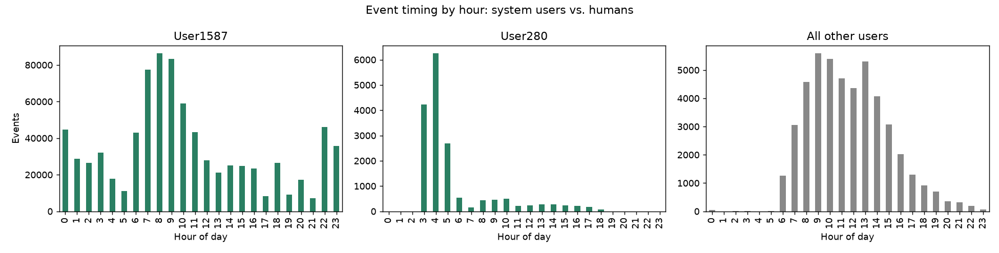
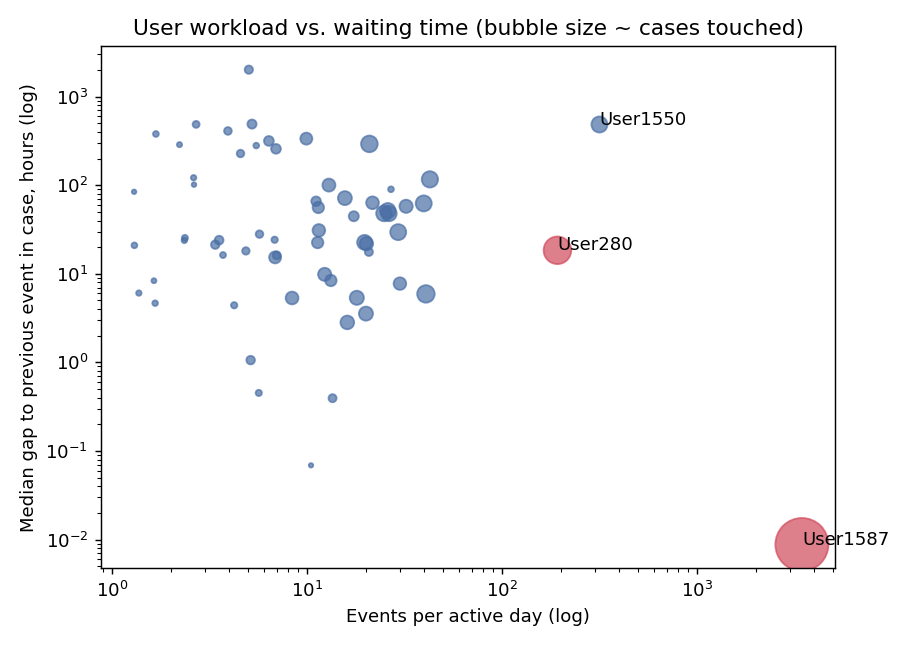
Judgment calls and how much they matter
- User1550 is counted as human. It made 1,583 events, almost all Invoice document deleted, on just 5 days. That could be a script, but such a short burst looks more like an administrator running a mass clean-up. Classifying it as a bot would change the manual count in only 1,577 cases (0.8%).
- User280 is counted as a bot, and this decision matters more. If its postings were counted as manual, the total manual workload would grow by 16,962 events, and NB2's share of all manual work would rise from 40% to 55%, because User280 does most of the NB2 postings.
Rule-based cross-check. A simple rule flags a user as a bot if they have at least 100 events and either more than 150 events per active day or more than half of their events between 03:00 and 06:00. This rule flags User1587, User280, User1550. It agrees with the two system users chosen above but also catches User1550, because the deletions were packed into so few days. A rule alone is not enough here. The pattern behind each user has to be looked at, which is why the final classification was done by hand.
Worked example: calculating the KPIs for two real invoices
| # | Timestamp | Wait since previous | Activity | Invoice (SAP_PO_No) | User |
|---|---|---|---|---|---|
| 1 | 01 Jul 00:36:55 | Data management | 5915315 | User1587 system | |
| 2 | 01 Jul 00:36:56 | 1 s | Initial validation | 5915315 | User1587 system |
| 3 | 02 Jul 00:42:26 | 24.1 h | Wait for goods receipt | 5915315 | User1587 system |
| 4 | 02 Jul 00:43:19 | 53 s | MM Posted Automatically | 5915315 | User1587 system |
Trace length = 4 events. Throughput time = last minus first timestamp = 1.00 days. All steps were done by the system user, so manual activities = 4 − 4 = 0. The case is touchless. Most of its time was spent waiting for the goods receipt to be registered.
| # | Timestamp | Wait since previous | Activity | Invoice (SAP_PO_No) | User |
|---|---|---|---|---|---|
| 1 | 06 Aug 07:30:32 | Data management | 6034996 | User1587 system | |
| 2 | 06 Aug 07:30:34 | 2 s | Initial validation | 6034996 | User1587 system |
| 3 | 08 Aug 07:09:35 | 47.7 h | Data management | 6042009 | User1587 system |
| 4 | 08 Aug 07:09:36 | 1 s | Initial validation | 6042009 | User1587 system |
| 5 | 11 Aug 12:57:33 | 3.2 days | Data management | 6047906 | User1587 system |
| 6 | 11 Aug 12:57:34 | 1 s | Initial validation | 6047906 | User1587 system |
| 7 | 19 Aug 11:28:15 | 7.9 days | Posted manually | 6034996 | User1341 human |
| 8 | 20 Aug 15:48:11 | 28.3 h | Posted manually | 6042009 | User1341 human |
| 9 | 21 Aug 13:14:09 | 21.4 h | Posted manually | 6047906 | User1341 human |
At first glance this looks like rework: validation runs three times and the invoice is posted three times. The SAP_PO_No column shows otherwise. These are three different invoices for the same purchase order, arriving on 6, 8 and 11 August. The system validated each one within seconds, then each waited for a person (User1341) to post it manually.
Trace length = 9 events. Throughput time = 15.2 days from the first to the last event of the whole case. Manual activities = 9 − 6 system events = 3. The case-level invoice value is 2,524,954 NOK, so a 2% discount would have been worth 50,499 NOK.
This case is typical of ZNB1: no real rework, but invoices that sit for one to two weeks before someone posts them. It comes back in Step 3 as an example of how the choice of end point changes whether an SLA counts as met.
The table below averages these KPIs over all cases in each PO type.
| Code | Mean trace length | Median throughput (days) | Mean manual activities | Touchless | Invoices per case | Rework within an invoice |
|---|---|---|---|---|---|---|
| ZNB2 | 4.2 | 0.00 | 0.06 | 96% | 1.05 | 0% |
| NB2 | 4.9 | 1.01 | 0.54 | 66% | 1.01 | 24% |
| ZNB4 | 5.1 | 0.00 | 0.10 | 93% | 1.28 | 1% |
| ZNB3 | 4.3 | 0.00 | 0.06 | 95% | 1.02 | 0% |
| ZJD1 | 7.3 | 2.05 | 1.12 | 60% | 1.88 | 4% |
| ZNB1 | 10.7 | 9.35 | 1.95 | 47% | 2.90 | 6% |
| ZJD3 | 11.3 | 6.01 | 1.72 | 53% | 2.78 | 10% |
| ZNB6 | 6.9 | 29.10 | 2.29 | 27% | 1.10 | 35% |
| ZRPC | 4.4 | 4.02 | 1.03 | 26% | 1.16 | 14% |
| ZNBF | 8.0 | 41.19 | 2.65 | 0% | 1.26 | 94% |
| ZRPM | 9.4 | 22.17 | 3.80 | 0% | 1.80 | 20% |
Step 3High-level screening: control and capability
All KPIs are transformed with log(x + 1). Cases are grouped by the week in which they started. PO types with at least 5 cases per week on average get X̄–S charts with limits for each subgroup size. ZNBF and ZRPM get individuals (I-MR) charts on single cases. The Shewhart rules applied are those of the Western Electric handbook:
- R1 one point beyond 3σ
- R2 2 of 3 consecutive points beyond 2σ on the same side
- R3 4 of 5 beyond 1σ on the same side
- R4 8 in a row on one side
- R5 6 in a row steadily rising or falling
A process counts as in control only if no point breaks any rule on either chart.
Throughput times range from seconds to months. Example 1 above took 1.004 days, so log(1 + 1.004) = 0.695. Example 2 took 15.2 days, giving 2.79. A 100-day case gives 4.62. The log scale pulls in the long tail so that a handful of extreme cases does not dominate the mean and standard deviation, and the distribution gets closer to the normal shape that control charts assume. The "+1" avoids log(0) for same-second cases and for touchless cases with zero manual activities.
Open ZNB1 below. Each dot on the left X̄ chart is the average log throughput time of all cases that started in that week. The green line is the overall average and the dashed red lines are the ±3σ limits. They get narrower in weeks with more cases, because an average of many cases varies less. The right S chart shows how spread out the cases were within each week.
Red dots break a rule. In ZNB1, the weeks of 21 and 28 July both lie more than 2σ above the average (R2): invoices that started then were unusually slow. The average then falls six weeks in a row through August (R5). The week of 29 September is above the upper limit (R1). The last two November weeks are below the lower limit (R1) after a run of low weeks (R3). For ZNB1 the late cases are faster, unlike most other PO types. The change in the case population at the end of the period (see Data) is the most likely reason, but the data alone cannot confirm it. A process with no red dots on either chart is "in control": its variation comes only from everyday randomness.
| Code | Chart | Trace length | Throughput time | Manual activities |
|---|---|---|---|---|
| ZNB2 | X̄–S (weekly) | 22/22 flagged R1, R2, R3, R4 | 20/22 flagged R1, R2, R3, R4, R5 | 17/22 flagged R1, R2, R3, R5 |
| NB2 | X̄–S (weekly) | 17/22 flagged R1, R2, R3 | 19/22 flagged R1, R2, R3 | 17/22 flagged R1, R2, R3 |
| ZNB4 | X̄–S (weekly) | 11/17 flagged R1, R2, R3 | 11/17 flagged R1, R2, R3 | 14/17 flagged R1, R2, R3 |
| ZNB3 | X̄–S (weekly) | 14/22 flagged R1, R2, R3 | 20/22 flagged R1, R2, R3, R4 | 17/22 flagged R1, R2, R3, R5 |
| ZJD1 | X̄–S (weekly) | 14/22 flagged R1, R2, R3, R4 | 17/22 flagged R1, R2, R3, R4 | 18/22 flagged R1, R2, R3, R4, R5 |
| ZNB1 | X̄–S (weekly) | 2/22 flagged R2 weekly-means OK | 13/22 flagged R1, R2, R3, R5 | 11/22 flagged R1, R2, R3 |
| ZJD3 | X̄–S (weekly) | 13/22 flagged R1, R3, R4 | 19/22 flagged R2, R3, R4 | 9/22 flagged R1, R4 |
| ZNB6 | X̄–S (weekly) | 6/21 flagged R1, R2 weekly-means OK | 7/21 flagged R1, R2, R3 | 11/21 flagged R1, R2, R3, R4 |
| ZRPC | X̄–S (weekly) | 5/22 flagged R1, R2, R3 | 3/22 flagged R1, R2 weekly-means OK | 6/22 flagged R1, R3 |
| ZNBF | I-MR (cases) | 15/34 flagged R1, R2, R4 | 6/34 flagged R1, R3 | 15/34 flagged R1, R2, R4 |
| ZRPM | I-MR (cases) | 0/5 flagged none | 0/5 flagged none | 0/5 flagged none |
How to read this: with thousands of cases per week, the limits of an X̄ chart become very narrow, so even small shifts between weeks count as special causes. As a robustness check, the weekly means were also charted as individual values. That treats normal week-to-week variation as common cause. Only a few charts pass even that test (marked "weekly-means OK"). The pattern repeats across PO types: stable in July and August, then rising throughput time and manual work from September, partly because of the shrinking, slower set of cases in the last two months. ZRPM passes only because it has 5 points, which proves nothing.
ZNB2 Third-party order Type 1

NB2 Return to vendor

ZNB4 Third-party order Type 3

ZNB3 Third-party order Type 2

ZJD1 Normal order

ZNB1 Manual order

ZJD3 Automatic order
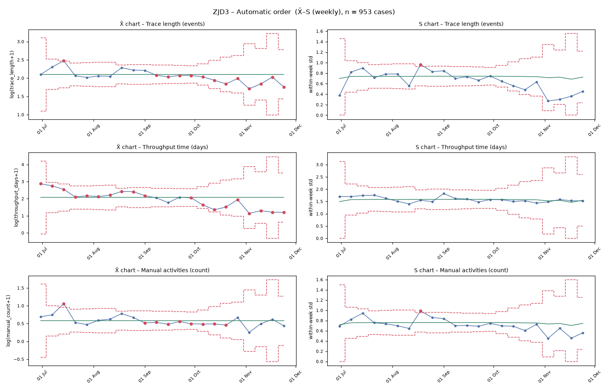
ZNB6 Third-party order Type 4
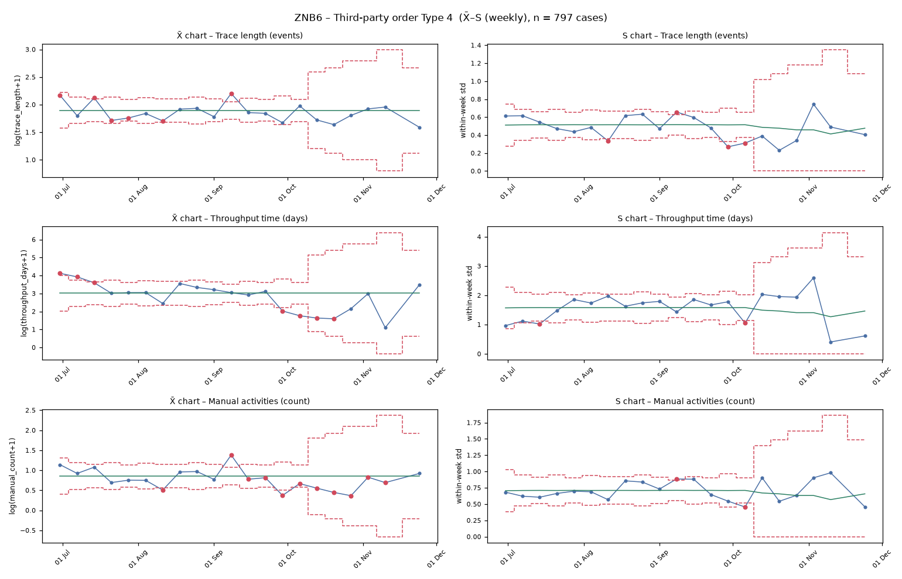
ZRPC Return order Type 1

ZNBF Transportation order

ZRPM Return order Type 2

Process capability against the payment SLAs
Cpu = (log(USL + 1) − μ) / 3σ, with μ and σ taken from log(throughput days + 1) and σ estimated within subgroups. USL is 10 days (soft SLA, cash discount) and 30 days (hard SLA, legal payment deadline). Cpu ≥ 1 means the process meets the limit with a 3σ margin. The observed breach rates are shown next to it because log throughput is far from normal: most types have a spike at zero (same-day automatic posting) and a long right tail.
ZNB1 (Manual order). The mean of log(throughput + 1) is μ = 2.291, which corresponds to a typical (geometric-mean) throughput of eμ − 1 = 8.9 days. The upper limit on the same scale is log(10 + 1) = 2.398.
The average sits almost exactly on the deadline, so about half of the invoices miss it (observed: 50%).
ZNB2 (Third-party Type 1) for comparison:
The average is far below the deadline, so even three standard deviations above it the process is still within 10 days. Only 3.4% of ZNB2 invoices take longer. Rule of thumb: Cpu ≥ 1.33 is comfortable, 1 is the minimum, and below 1 means the deadline cuts into the bulk of the cases.
| Code | Cases | Median days | P90 days | Cpu 10 d | Breach > 10 d | Cpu 30 d | Breach > 30 d |
|---|---|---|---|---|---|---|---|
| ZNB2 | 92,768 | 0.00 | 0.0 | 1.17 | 3.4% | 1.71 | 1.2% |
| NB2 | 34,669 | 1.01 | 5.0 | 0.71 | 3.5% | 1.17 | 0.5% |
| ZNB4 | 26,349 | 0.00 | 12.9 | 0.49 | 13.6% | 0.79 | 4.4% |
| ZNB3 | 20,336 | 0.00 | 1.1 | 1.48 | 0.5% | 2.19 | 0.1% |
| ZJD1 | 5,519 | 2.05 | 44.2 | 0.21 | 27.3% | 0.44 | 15.1% |
| ZNB1 | 4,753 | 9.35 | 80.4 | 0.02 | 49.5% | 0.24 | 30.7% |
| ZJD3 | 953 | 6.01 | 80.3 | 0.07 | 42.0% | 0.29 | 25.5% |
| ZNB6 | 797 | 29.10 | 145.4 | -0.13 | 63.2% | 0.09 | 49.8% |
| ZRPC | 364 | 4.02 | 28.1 | 0.24 | 25.3% | 0.52 | 7.7% |
| ZNBF | 34 | 41.19 | 79.9 | -0.42 | 85.3% | -0.00 | 67.6% |
| ZRPM | 5 | 22.17 | 54.7 | -0.28 | 80.0% | 0.13 | 20.0% |
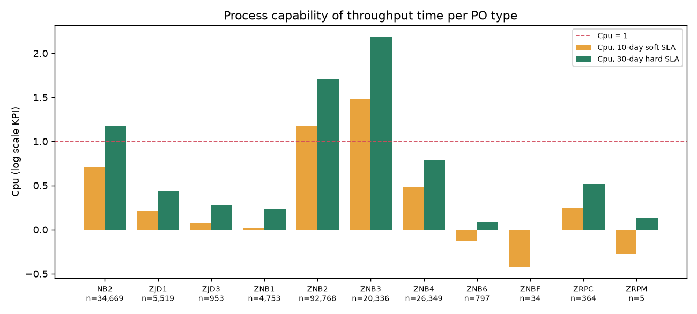
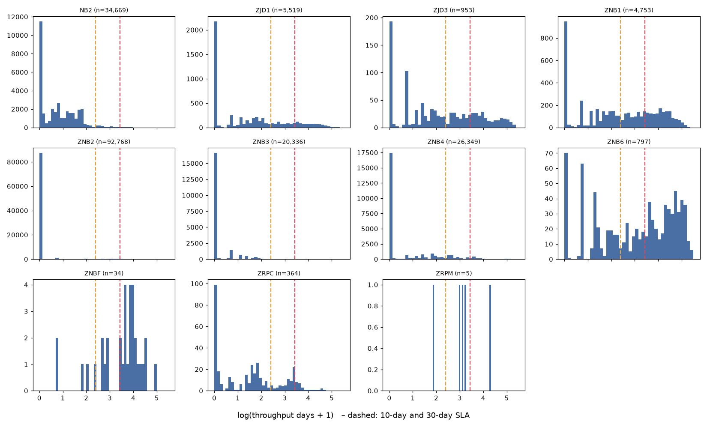
When does an invoice meet the SLA?
Both SLAs are about payment. The event log does not contain payment. It ends when the invoice is posted in SAP, which makes it payable. Three activities do this: MM Posted Automatically, Posted manually and MM Autopost after manual process. Payment happens later in a payment run, when the open item is cleared in financial accounting, and that step is not in the data. Case_Clearing_value_NOK gives the cleared amount but no date.
So in this report "SLA met" means posted within 10 (or 30) days. That is a necessary condition for paying on time, but not proof of it. The clock also starts at the first recorded processing step, not at the invoice date, so time spent before scanning is invisible. Both effects make the real SLA performance somewhat worse than measured here. An exact measurement would need the invoice receipt date and the clearing date from the SAP accounting documents.
Where the clock stops makes a big difference, because a case can hold several invoices. Three end points were compared:
- Case, last event
- First to last event of the whole case. This is the throughput time used above. It mixes several invoices and any steps after posting.
- Case, first posting
- First event to the first posting in the case. This is when the first invoice became payable, but later invoices on the same PO are ignored.
- Per invoice cycle
- For each invoice (
SAP_PO_No) separately, from its first event to its first posting. This is the closest match to a payment SLA and the recommended measure.
Case, last event: 15.2 days, so the case breaks the 10-day SLA. Case, first posting: 13.2 days, also a breach. Per invoice: 13.17, 12.36, 10.01 days, so all three invoices break the 10-day SLA, the last one only just. One case counts as one breach under the first two measures and as three breaches under the third.
| Code | > 10 d: case, last event | > 10 d: case, first posting | > 10 d: per invoice | Cpu 10 d: last event | Cpu 10 d: per invoice | > 30 d: per invoice | Cpu 30 d: per invoice |
|---|---|---|---|---|---|---|---|
| ZNB2 | 3.4% | 1.8% | 1.3% | 1.17 | 2.12 | 0.2% | 3.07 |
| NB2 | 3.5% | 3.3% | 3.2% | 0.71 | 0.73 | 0.3% | 1.21 |
| ZNB4 | 13.6% | 3.2% | 2.1% | 0.49 | 1.03 | 0.8% | 1.54 |
| ZNB3 | 0.5% | 0.5% | 0.5% | 1.48 | 1.51 | 0.1% | 2.23 |
| ZJD1 | 27.3% | 9.5% | 17.0% | 0.21 | 0.33 | 7.3% | 0.60 |
| ZNB1 | 49.5% | 16.9% | 23.9% | 0.02 | 0.23 | 8.1% | 0.52 |
| ZJD3 | 42.0% | 12.3% | 23.0% | 0.07 | 0.20 | 12.5% | 0.44 |
| ZNB6 | 63.2% | 61.9% | 61.9% | -0.13 | -0.11 | 47.9% | 0.11 |
| ZRPC | 25.3% | 22.5% | 21.4% | 0.24 | 0.29 | 4.9% | 0.59 |
| ZNBF | 85.3% | 85.3% | 81.0% | -0.42 | -0.38 | 59.5% | 0.06 |
| ZRPM | 80.0% | 80.0% | 88.9% | -0.28 | -0.51 | 33.3% | 0.38 |
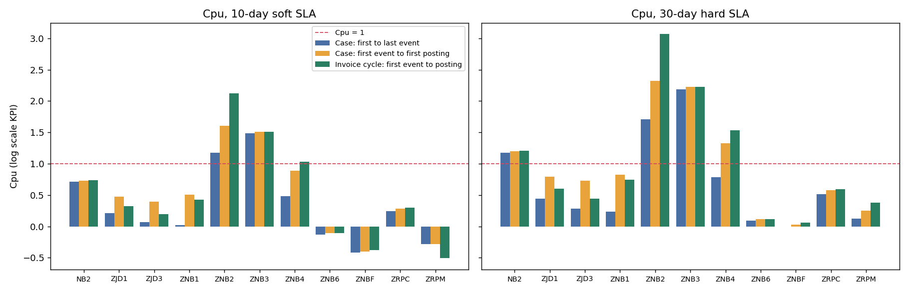
What changes and what doesn't. Across all types, 12,893 cases break the 10-day SLA when measured to the last event. Per invoice it is 9,045 of 207,086 posted invoices (4.4%).
ZNB1 and ZJD1 stay clearly not capable on every measure (per-invoice Cpu 0.23 and 0.33). The cause is manual posting. In ZNB1, 59% of invoices are posted by hand after a median of 7.4 days, and 36% of those take longer than 10 days. Automatically posted ZNB1 invoices are done the same day.
ZNB4 looked poor only because of the case view. Its cases often hold several invoices. Per invoice, only 2.1% miss 10 days and Cpu is 1.03. NB2, ZNB2 and ZNB3 barely change.
Step 4Where to focus
Need for improvement depends on how bad a process is (control, Cpu) and how much it matters (volume, manual effort, money). The discount column is the 2% cash discount missed on invoices that were posted after more than 10 days.
Each invoice (SAP_PO_No) can be followed from its first event to its posting, so lateness is counted per invoice. Its value is not in the data: Case_Invoice_Value_NOK is the same on every row of a PO and grows with the number of invoices, so it is the total for the PO. The value is therefore split evenly over the PO's posted invoices. For example, PurDoc174751 from Step 2 was worth 2,524,954 NOK; 3 of its 3 invoices were posted after more than 10 days, so it misses 50,499 NOK. Invoices that were never posted are left out.
Counting per PO instead, with the whole PO value lost once its last invoice is posted after 10 days, would give 174.2M NOK. That overstates the loss, because one late invoice, or invoices that simply arrive weeks apart, would put the whole PO value at loss. The exact amounts need the invoice value per document from SAP.
How to read the columns: share of manual work shows where accountants spend their time (cost). Invoices > 10 d and missed discount show where deadlines are missed (money). Cpu and KPIs in control show how reliable the process is.
| Code | Share of cases | Share of manual work | Invoices > 10 d | Share of all late invoices | Missed 2% discount (NOK) | Cpu 10 d (per invoice) | KPIs in control |
|---|---|---|---|---|---|---|---|
| ZNB2 | 49.7% | 11.2% | 1,206 | 13.3% | 0.2M | 2.12 | 0/3 |
| NB2 | 18.6% | 39.7% | 1,118 | 12.4% | 0.1M | 0.73 | 0/3 |
| ZNB4 | 14.1% | 5.4% | 685 | 7.6% | 0.1M | 1.03 | 0/3 |
| ZNB3 | 10.9% | 2.5% | 95 | 1.1% | 0.0M | 1.51 | 0/3 |
| ZJD1 | 3.0% | 13.1% | 1,672 | 18.5% | 30.8M | 0.33 | 0/3 |
| ZNB1 | 2.5% | 19.6% | 3,071 | 34.0% | 27.3M | 0.23 | 0/3 |
| ZJD3 | 0.5% | 3.5% | 572 | 6.3% | 2.3M | 0.20 | 0/3 |
| ZNB6 | 0.4% | 3.9% | 501 | 5.5% | 0.2M | -0.11 | 0/3 |
| ZRPC | 0.2% | 0.8% | 83 | 0.9% | 0.0M | 0.29 | 0/3 |
| ZNBF | 0.0% | 0.2% | 34 | 0.4% | 0.1M | -0.38 | 0/3 |
| ZRPM | 0.0% | 0.0% | 8 | 0.1% | 0.0M | -0.51 | 3/3 |
Recommended scope options
- Manual and normal orders (ZNB1 + ZJD1), time to posting. This is the strongest case. Together they have 4,743 invoices that took longer than 10 days, Cpu far below 1 on every measure, and about 58.1M NOK of missed discount, because these orders carry the large invoices (average about 1.2M NOK per case). The bottleneck is manual posting: about half of their invoices are posted by hand after a median of 5–7 days. Questions for the project: why don't these invoices post automatically, and where do they wait before a person picks them up?
Annotation · partly answered
For many of them, the decision is made at validation: 44% of ZNB1 and 32% of ZJD1 invoices are routed straight to the manual queue (
CTRL1). The sharper project question is which validation rule triggersCTRL1for these PO types. Answering it needs the SAP validation configuration or messages, which aren't in the event log. - Return to vendor (NB2), manual activities. A return is a "reverse PO": it follows goods bought under another PO type that are sent back, for example because they arrived damaged, and the supplier may issue a credit note. It accounts for 40% of all manual events while meeting both SLAs reasonably well. It also has the most real rework among the large types (24% of cases). The causes to explain are the direct "Posted manually" path and the GR loop through WM and "Transfer to MM". Automating these is a cost case, not a deadline case.
Annotation
The direct "Posted manually" path is already 63% automated by the nightly batch job User280. The remaining manual cost sits in the 37% posted by people and in the WM loop (16% of NB2 invoices start via
ZWMGRW). Moving more of the direct path into the batch run would cut manual work without new tooling. - Automatic orders (ZJD3), the same mechanism on a smaller scale. 23% of its invoices take longer than 10 days (Cpu 0.20), and half are posted manually although the PO type is meant to be automatic. It could be added to option 1 as a comparison group.
ZNB4 was a candidate in an earlier version of this report, but per invoice it meets the 10-day SLA (see When does an invoice meet the SLA?). ZNB6, ZNBF and ZRPM have the worst capability, but together they make up less than 0.5% of cases. They are better kept as side notes than chosen as the project scope.